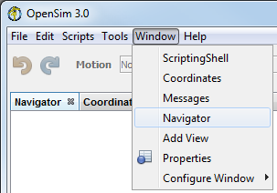
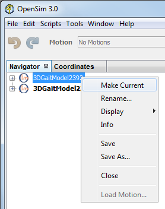

The Navigator window shows you the set of models that have been loaded into OpenSim, along with their associated objects (such as motions), in a hierarchical, or tree, representation. This is particularly useful for large biomechanical models, which would be overwhelming if presented in a flat structure. For example, a simplified model used for gait analysis is made up of 92 muscles and 23 segments.
By presenting the currently loaded models in a hierarchical format, you are able to visualize how different objects are related to one another. The Navigation window also allows you to focus on the objects needed for the task at hand by collapsing tree nodes for objects that are currently irrelevant. The topics covered in this section include:
Opening and Closing the Navigator Window
When you launch OpenSim, the Navigator window appears but is blank since no models have been loaded yet. As models are loaded into OpenSim, they show up as sub-trees (folders) in the Navigator window. As with other OpenSim windows, you can decide to close the Navigator window to save space on the screen and reopen it again later. However, at most you can have only one Navigator window displayed at a time. Similar to other windows opened by the OpenSim application, the Navigator window can be dragged and docked in various places on the screen.
|  |
|
|---|
The Current Model
OpenSim allows you to load in more than one model at a time. This feature is distinctive to OpenSim and is very useful for comparing models and investigating the effects of various model changes. However, OpenSim functions can only be applied to one model at a time.
OpenSim designates the one model that is being worked on and to which menu commands apply (e.g., Save, Close) as "current." The current model is indicated in the Navigator window in bold. When a model is made current, all menu commands operate on it. To make a model current:
|  | There are several ways you can make a model current:
|
|---|
The Current Motion
You can also load multiple motions into OpenSim. If a single motion is made current, then it is reflected in the motion textbox in the toolbar at the top of the OpenSim GUI. The current motion is also marked in bold in the Navigator window. If more than one motion is marked as current (e.g. when synchronizing multiple motions, as described in Loading Motions), then all the nodes corresponding to current motions are displayed in bold.
There are several ways you can make a model current:
|
|---|
Next: Navigator Tree Nodes
Home: Navigator Window
{kind=link}
{kind=link}
{kind=link}